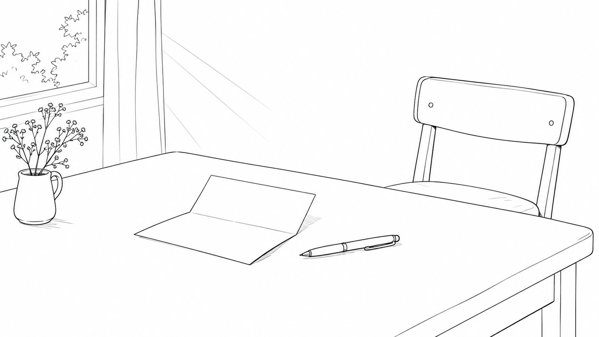

値上げをお客様にどう伝えるか。｜公正性の知覚と、伝える順番

どーも！とーるです！
「値上げしたいんですけど、今のお客様になんて言えばいいか分からなくて……」
これ、よく相談されます。
金額は決まっている。理由もある。でも、文面が書けない。
書いては消し、書いては消し。
値上げのお知らせって、下書きの中でいちばん長生きしてるファイルだったりしますよね。
でもこれ、文章力の問題じゃないんです。
以前、#77で「払った価値がありました！」
はまだ値上げのサインじゃない、という話を書きました。
今回はその先、値上げすると決めたあとの話です。
公正性の知覚——揉めるのは、金額じゃなくて「納得」
行動経済学に、公正性の知覚という考え方があります。
人は、値上げを「金額が上がったかどうか」ではなく、
で判断する、というものです。
これ、面白いパターンがあって。
受け入れられやすい理由
- コストが上がった
- 提供内容が増えた
不公正と受け取られやすい理由
- 人気が出てきたから
- 予約が埋まるようになったから
同じ金額の値上げでも、理由が違うだけで反応が変わります。
前者は「仕方ない」。
後者は「足元を見られた」。
売れているから上げる、って経済的にはすごく自然なことなんですけどね。
でも人は、取引を経済合理性だけで見ていないんです。
「この人は、こっちの足元を見てないか」
ここを見ている。
だから「売れてるので上げます」は、事実でも口に出すと損をするかもしれません。
伝える順番は、4つです
僕なら、この順番で組みます。
① 先に伝える
値上げ後に知られるのが、いちばんまずいです。
金額よりも、「黙ってたの？」のほうが残りますから。
最低でも1ヶ月前。
継続サービスなら、もっと前。
② 理由を先に、金額をあとに
つい金額から書きたくなるんですけど、逆なんです。
金額を先に見ると、そこで判断が終わります。
そのあとに何を説明しても、全部言い訳に見える。
③ 今のお客様をどうするかを、明確に書く
ここが一番大事かもしれません。
- 既存の方はいつまで据え置きなのか
- 継続中の方はどうなるのか
- 値上げ前に申し込める期間があるのか
書いてないと、全員が自分で心配します。
そして人は、分からないときは悪いほうに想像するんですよね。
④ 謝らない
これ、意外と大事です。
「このたびは申し訳ございませんが……」
と始めると、値上げが「悪いこと」になります。
悪いことをする人からは、買いづらいですよね。
順番を入れ替えるだけで、変わります
骨組みだけ並べてみますね。
いつもありがとうございます。
（理由） 今回、サポートの内容を○○まで広げることにしました。
（時期） それに伴って、１月から価格を改定します。
（金額） 新価格は○○円です。
（既存の扱い） いまご利用中の方は、6ヶ月間は現行価格のままです。
特別なことは何も書いていません。
でも読んだ側の頭の中では、
「内容が増える」→「だから上がる」→「自分はしばらく大丈夫」
と、順番に処理されていきます。
順番が逆だと、
「上がる」→「えっ」→（以降読まない）
になるんです。
SNSでも、同じことが起きています
サブスクの値上げ告知って、よく荒れますよね。
でも、荒れているものと、そうでないものがある。
差を見てみると、だいたいこの2つです。
- 前に言ったか
- 既存の利用者をどうするか書いてあったか
金額の大きさじゃないんですよね。
個人のサービスでも、規模が小さいだけで構造は同じです。
離れる人は、たぶん離れます
最後に、これだけは正直に書いておきます。
どんなに丁寧に伝えても、離れる人は離れます。
それは、伝え方が悪かったからじゃないです。
価格で選んでいた方は、価格で離れる。とても自然なことだと思います。
だから値上げって、
んですよね。
そこを覚悟しておくと、文面が弱くならない。
弱い文面は、相手にも伝わります。
自信がなさそうに見える値上げは、余計に揉めるんです。
金額を上げるときに必要なのは、うまい言い回しじゃなくて、
なのかもしれません。
とーる｜猫好きの行動経済アナリスト